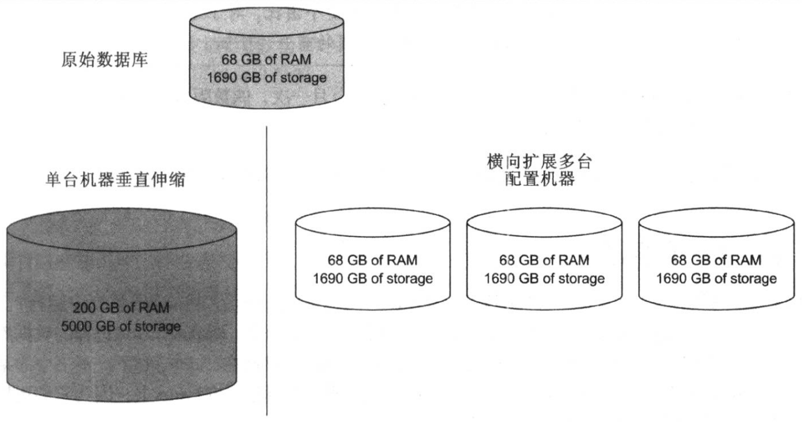

emmm，水老陈又开新篇啦，认识一下 Mongo。
MongoDB 实战之第一部分第一章 全新 WEB 数据库
本章内容：
- MongoDB 历史，设计目标以及关键特性
- 简要介绍 shell 和驱动
- 使用场景和限制
- MongoDB 最新更新
1.1 为互联网而生
MongoDB 诞生于一个雄心勃勃的项目。在2007年，纽约一个叫10gen的创业团队开始在一个平台即服务上，有一个应用服务器和一个数据库组成，托管web 应用，根据需要伸缩。
10gen 最终发现，开发者并不喜欢放弃对技术栈的控制，但是用户却喜欢上了10gen的数据库技术。这就导致10gen团队专业开发这个数据库产品，最后形成了MongoDB项目。
10gen公司的名字也已经修改成为MongoDB,Inc。该公司继续支持这个开源项目的开发工作。代码完全公开下载，并且可以免费修改、使用，只要遵守代码开源协议即可。
从MongoDB历史中我们了解的最重要的事情就是MongoDB的设计目标就是极简、灵活、作为web应用栈的一部分。
1.2 MongoDB 键特性
1.2.1 文档数据模型
MongoDB的数据模型是面向文档的。
- JSON 文档中除了数值类型以外，其他都需要一对引号。
- 从内部来讲，MongoDB以二进制JSON格式存储文档数据，或者叫做BSON。BSON 有相似的数据结构，但是专门为文档存储设计。当查询MongoDB并返回结果时，这些数据就会转换为易于阅读的数据格式。
- 关系型数据库包含表，MongoDB 拥有集合。换句话说，MySQL在表的行里保存数据，而MongoDB在集合的文档里保存数据，你可以把集合当做一组文档数据。集合是MongoDB中非常重要的概念。集合中的数据存储在磁盘上，而且大部分查询需要指定查询的目标集合。
- MongoDB 是没有 schema 的，这带来一些好处。首先，应用程序的代码强制数据结构而不是数据库。在频繁修改数据定义的时候就可以加速应用程序开发。其次，无 schema 模型允许用户使用真正的变量属性来表示数据。
1.2.2 ad hoc 查询
常说的系统支持主动查询模式（ad hoc queries）是指不需要事先定义系统接收何种查询。关系型数据库有这个属性，它们忠实地执行格式正确的包含各种条件的SQL查询。MongoDB的设计目标之一就是保留大部分关系型数据库的功能。
1.2.3 索引
- ad hoc 查询的一个关键元素就是查找在创建数据库时还不知道的值。随着数据库中添加的文档数据越来越多，查询值的成本变得越来越高。
- MongoDB中的索引使用了B-树(平衡树）数据结构。B-树索引也大量使用于许多关系型数据库中，对于不同的查询做了优化，包括范围扫描和条件子句查询。但是新的引擎已经支持日志结构合并-树（LSM）。
- 大部分数据库会给每个文档对象一个主键（primary key），一个唯一的数据标识。每个主键会自动索引，这样就可以使用唯一的键来高效的访问每个数据，MongoDB也不例外。
- 使用MongoDB，每个集合我们可以创建64个索引。这些索引也可以在其他关系型数据库中找到：升序、降序、复合键、hash、文本以及地理空间索引。因为MongoDB和绝大多数关系型数据库RDMBSs使用了相同的索引数据结构，所以管理这些系统的建议都是类似的。
1.2.4 复制
MongoDB提供了数据库复制特性，叫做可复制集合（replica set）。可复制集合在多个机器上分布式存储数据，在服务器或者网络出错是，实现数据冗余存储和自动灾备。此外，复制还用于伸缩数据库操作。如果你在开发读取密集型应用，比如常见的一些网站项目，就可以通过分散读取压力到可复制集群中的服务器来实现。
可复制集合由多台服务器组成。通常，每个服务器有独立的物理机。我们调用这些节点，任意时候，一个节点作为主节点，则其他的作为次节点。与其他数据库中的主从复制类似，可复制集合的主节点可以同时接收读/写操作，但是从服务器只能进行读操作。
真正让可复制集合独一无二的是它可以支持自动化灾备：如果主节点失败，则集群中会选择一个从节点，并自动提升为主节点。当之前的主节点回归是，它会继续作为从节点。
1.2.5 加速与持久化
在数据库系统领域，写入速度和持久化之间存在矛盾的关系。
写入速度（write speed）可以理解为数据库在给定的时间内插入、更新和删除的容量。持久性（durability）指的是这些写操作被永久保存的保证级别。
MySQL 中的InnoDB是一个事务性存储引擎，他可以确保持久性。他通过两个地方确保实现这一目标：一是在事务日志，二是在内存缓存池里。事务日志会立即同步到磁盘，而缓存池则会通过后台线程同步到磁盘。对于MongoDB,用户通过选择写入语义来维持速度和持久性之间的平衡。对于高容量、低价值的数据（比如点击流和日志），写入后就不用管的模式比较理想。对于重要的数据，安全模式的设置是必须的。
从MongoDB 2.0开始，日志功能默认是启用的。启用日志功能后，默认100毫秒就会写入一次日志文件。如果服务器意外关机，日志会通过重启服务器来确保MongoDB数据文件恢复为一致状态。这是云信MongoDB最安全的方式。
对于写入压力，可以通过关闭日志功能以提高性能。坏处是意外关机之后可能导致数据文件冲突。因此，关闭日志功能，就应该使用主从复制模式，推荐一个从服务器，即使一台机器关机，还有一台机器来保证数据完整性。
设计 MongoDB 的目标就是让大家可以保持速度和持久性平衡，但是对于重要的数据，我们强烈推荐安全设置。
1.2.6 伸缩
垂直扩展： 伸缩数据库的最简单方式就是升级服务器硬件。如果你的应用是运行在单个节点上，则通常可行的方案就是通过组合添加更快的磁盘、更多内存以及更强的CPU来解除数据库性能瓶颈。
提升单节点参数的做法也称垂直扩展（vertical scaling或scaling up）。垂直扩展非常简单可靠，但是达到某个节点后成本很高，最终我们会达到一个无法低成本垂直扩展的临界点。水平扩展： horizontally或scaling out。水平扩展指的是在多太机器上分布式存储数据库，而不是提升单个节点的配置。水平扩展架构可以运行在许多台很小、廉价的机器上，通常可以减少硬件成本。而且，跨机器分布式存储数据可以降低宕机带来的丢失数据的后果。
设计MongoDB的目标就是利用其水平伸缩。它通过基于范围的分区机制来实现水平扩展，称为分片机制，它可以自动化管理每个分布式节点存储的数据。另外，还有基于哈希和基于tag的分片机制，这也是另外一种形式的基于范围的分片机制。
